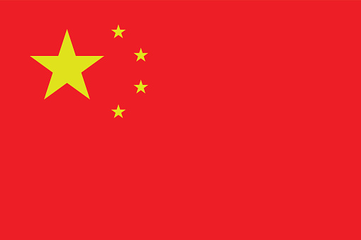
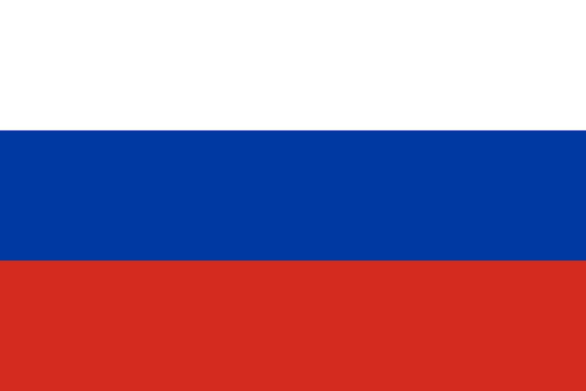
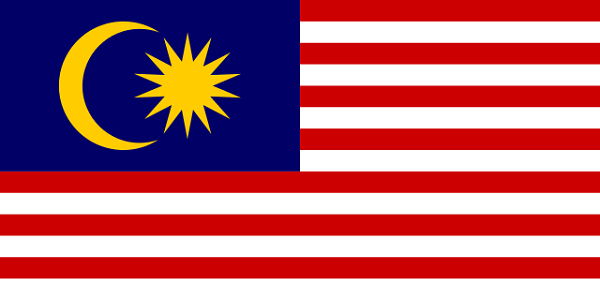

- - Eliminar residuos y contaminación desde el diseño.
- - Mantener productos y materiales en uso.
- - Regenerar sistemas naturales.
- - Lucha contra el cambio climático y limitar los impactos medioambientales del uso de los recursos.
- - Garantizar la seguridad del suministro de recursos esenciales.
- - Identificar y crear nuevas oportunidades de crecimiento económico.
Economia Circular
La economía circular es un nuevo modelo de producción y consumo que garantiza un crecimiento
sostenible en el tiempo. Con la economía circular promovemos la optimización de recursos, la
reducción en el consumo de materias primas y el aprovechamiento de los residuos, reciclándolos o
dándoles una nueva vida para convertirlos en nuevos productos.
El objetivo de la economía circular es, por tanto, aprovechar al máximo los recursos materiales
de los que disponemos alargando el ciclo de vida de los productos. La idea surge de imitar a la
naturaleza, donde todo tiene valor y todo se aprovecha, donde los residuos se convierten en un
nuevo recurso. Así, se logra mantener el equilibrio entre el progreso y la sostenibilidad.
Paises con mayor indice de contaminación
Cada año se emiten a la atmósfera de la Tierra más de 36.000 millones de toneladas de CO2, el principal de los Gases de Efecto Invernadero que contribuyen al Cambio Climático. La mayor parte de estos gases nacen del uso de combustibles fósiles, la generación de energía por vías no renovables y las actividades humanas contaminantes.
| País | Mill. Ton. CO2/Año | Bandera |
|---|---|---|
| China | 10.065 |  |
| EEUU | 5.416 |

|
| India | 2.654 |

|
| Rusia | 1.711 |  |
| Japon | 1.162 |

|
¿Cuáles son los paises que más contaminan los oceanos?
Los habitantes de los países ricos producen muchos más residuos plásticos que los de los países pobres. Sin embargo, la ecuación se invierte cuando se trata de los que más vierten al océano, según un estudio publicado recientemente por Our World in Data. Esto es lo que muestran los resultados.
| País | Porcentaje de Residuos | Bandera |
|---|---|---|
| Filipinas | 36.38% |

|
| India | 12.92% |
|
| Malasia | 7.46% |  |
| China | 7.22% | |
| Indonesia | 5.75% |

|